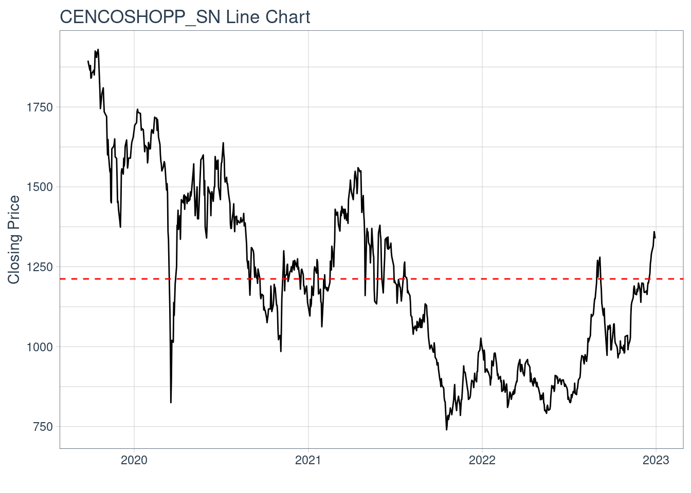
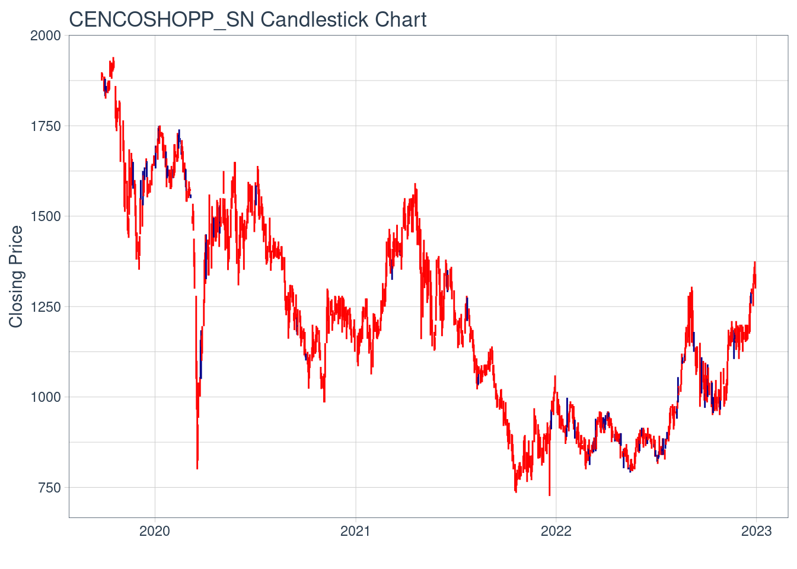
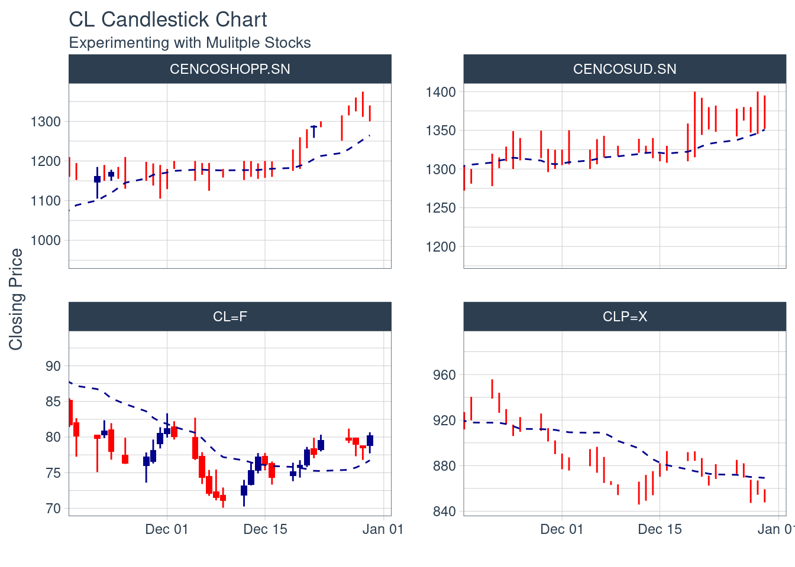

print(round(mean(CENCOSHOPP.SN$close),digits=0))[1] 1212Fecha de entrega: Jueves 28 de Septiembre 23:59.
Cencosud shopping es un operador de centros comerciales en latinoamerica, tiene presencia en Chile, Perú, Colombia, perteneciente al consorcio Cencosud. La compañía entro a la bolsa en junio de 2019. Este activo pertenece al IPSA y corresponde al sector inmobiliario
Con respecto a la base de datos Web of Science, la revista Housing catalogoda con Q2 tiene un paper citado 15 veces llamado ” New neoliberal public housing policies: between centrality discourse and peripheralization practices in Santiago, Chile”. Este explica que el enfoque neoliberal al momento de construir viviendas sociales es distinta dependiendo del sector geografico y esto se debe a los distintos discursos ideologicos y practicas socioespaciales.
Otro paper llamado “Neoliberal Lakeside Residentialism: Real Estate Development and the Sustainable Utopia in Environmentally Fragile Areas” de la revista Land, catolgada con un Q2, se trata sobre el rol que tuvo el desarollo inmobiliario neoliberal en la transformación de dos ciudades lacustres en el sur de Chile.
Por ultimo, el paper “Sustainability Attributes in Real Estate Development: Private Perspectives on Advancing Energy Regulation in a Liberalized Market” de la revista Sustainability, catalogada en Q2, tiene 10 citas menciona que los mercados inmobiliarios donde los certificados de eficiencia energética no son obligatorios, como el caso de Santiago de Chile, implementar soluciones para satisfacer la demanda sobre sostentabilidad genera un dilema si estas deben aceptarse como medidas.
Por lo tanto, la literatura menciona que la industria inmobiliaria en Chile tiene un impacto en la calidad de vida de las personas y es crucial que sea sostenible.
A continuación se presenta la evolución del activo desde que empezó a cotizar en bolsa (26 de septiembre de 2019 hasta el 31 de diciembre de 2022)
El activo CENCOSHOPP tiene un valor promedio para el intervalo de tiempo mencionado igual a rround(mean(CENCOSHOPP.SN$close),digits=0)
print(round(mean(CENCOSHOPP.SN$close),digits=0))[1] 1212
CENCOSHOPP.SN %>%
ggplot(aes(x = date, y = close)) +
geom_candlestick(aes(open = open, high = high, low = low, close = close)) +
labs(title = "CENCOSHOPP_SN Candlestick Chart", y = "Closing Price", x = "") +
theme_tq()
La motivación detrás de estudiar activos del sector inmobiliario se debe al rol que tiene en la economia y en la sociedad dado que este tiene un impacto en la calidad de vida de las personas y desarollo de la ciudad.
La motivación de estudiar el activo de Cencosud shopping radica en el impacto que tiene dicha empresa en el sector minorista y comercial, siendo esta importante no solo en el sector nacional, si no qué tambien internacional. Al estudiar este activo permite estudiar patrones de consumo.
En Julio de 2023, Cencosud Shopping anuncio un nuevo proyecto que consiste en crear un centro comercial en Vitacura, la inversión estimada es de 120 millones de dolares y se espera que empiece a operar en 2026 (DF, 2023). Por lo tanto, cencosud shopping es una empresa en constante expansión lo cual lo hace interesante de estudiar.
Los tres activos que podrian tener correlación con CencosudShopping son; Cencosud, esto se debe a que CencosudShopping es una unidad de negocio del consorcio cencosud; El dolar, dado que al operar en diversos paises operan con distintas divisas entonces una fluctuación en el tipo de cambio podría repercutar en los ingresos, tambien el precio del dolar puede afectar en inversiones en el sector inmobiliario. El tercer activo es el valor del petróleo, esto se debe a que este insumo permite fabricar materiales de construcción como lo seria el asfalto, plástico y aislantes. Si el precio del petróleo aumenta, los costos de producción y construcción pueden elevarse, lo que repercuta en los precios y la rentabilidad del sector inmobiliario. Ademas, el petroleo es un elemento crucial para el transporte y logística de los materiales a utilizar.

Con los gráficos anteriores se muestra que Cencosud y Cencosud Shopping tienen la misma tendencia, con respecto al precio del combustible, este tiende a la baja y las acciones de Cencosud a la alta. Por último, cuando el dólar tiende a la baja, las acciones del Cencosud Shopping aumentan. Sin embargo, con solo los gráficos no se puede asegurar que exista una correlación.
%2022.38.52.png)
Este gráfico obtenido de mbi muestra la evolcuión del rendimiento del IPSA y cencoshopp durante 2021-2022, donde el el retorno del IPSA fue mayor.
Las acciones de Cencoshopp son ordinarias y de solo una serie, por lo tanto, no tienen acciones preferentes. En total tienen 1.705.831.078 acciones, en donde Cencosud S.A tiene el 71,64% de la propiedad (CMF,nd).
CencosudShopping emite los siguientes tipos de bonos Línea N° 940, Series A y C y Línea N° 941, Series B, E (Humphreys,sf). Humphreys cataloga esta empresa con AA+, lo que muestra que es una empresa confiable y si paga sus deudas.
El articulo de Yahoo finance publicado el 27 de abril de 2023 mencionada las siguientes inversiones que planea realizar CencosudShopping en Chile, Colombia y Peru por un monto de 500Millones de dolares.
En Chile, desembolsaran 120 Millones de dolares para construir un mall en Vitacura, que considera incorporar mas de 330000 metros cuadrados arrendables para más de 1000 locales comerciales. El portal de rancagua lo desean ampliar para que hayan 140 tiendas en dos niveles y aumentar el GLA (superficie bruta alquilable) de 43963 metros cuadrados hasta 78000. Por ultimo, el Florida Center desean aumentar el GLA hasta 146000 metros cuadrados.
En Colombia, la inversión que desean llevar a cabo es remodelar y ampliar el Centro Comercial Limonar en Cali, Colombia. Esta inversión consiste en tener 20.000 GLA y agregar una terraza gastronomica.
Por ultimo, en Perú desean construir un nuevo centro comercial en el distrito de La Molina de Lima y otro en San Juan de Lurigancho.
No fue posible encontrar la cartera de inversiones que posee el activo CencosudShopping. Sin embargo, en los estados financieros de Julio 2023, en total los pasivos son de 1.398.768.940M de pesos chilenos y los activos totales para esa fecha son de 4.108.332.197M de CLP.
https://www.cmfchile.cl/institucional/mercados/prospectos.php?pro=AC&tipo=COM&or=6&pestania=
Basándose en el “PROSPECTO DE EMISIÓN DE ACCIONES DE PAGO, REGISTRADO BAJO EL NÚMERO 1080 EL 06 DE MAYO DE 2019.” (CMF) la emisión tiene una parte de antecedentes legales, características de la emisión y descripción de la colocación.
Los antecedentes legales consisten en la junta extraordinaria de accionistas y publicación e inscripción de extracto. La junta extraordinaria de accionistas fue acordada el aumento de capital el 8 de enero de 2019, luego el 10 de abril del mismo año se ratificaron y rectificaron los acuerdos acordados previamente. Con respecto a la publicación e inscripción de extracto, fue inscrita en fojas 30379 N° 15252 el 18 de abril de 2019 en el registro de comercio de bienes raíces de Santiago, en el diario financiero la noticia fue publicada el mismo día
Las características de la emisión fueron las siguientes:
1) El monto máximo de la emisión es de $466.816.007.752 CLP.
2) El número total de acciones a emitir son de 547.263.785, siendo todas estas acciones nominativas y ordinarias.
3) Las primeras emisiones de acciones representarán un 30,73%, en relación con el total luego de la colocación.
4) Las acciones no tienen valor nominal.
5) Con respecto al precio de colocación todas las acciones fueron ofrecidas a los accionistas de la junta extraordinaria a un precio de 853 CLP, sin embargo, todos rechazaron la opción de compra por lo que fueron colocadas para accionistas y terceros a un precio acordado por la directiva.
6) Con respecto al plazo de colocación y formas de pago, tienen un plazo de tres años para colocar, suscribir y pagar, este plazo finalizó el 8 de enero de 2022. El pago debe ser en pesos, cheque, vale vista bancario o transferencia bancaria.
7) Los fondos recaudados serán utilizados para pagar parte de la deuda.
Por último, la descripción de la colocación es la siguiente:
1) se incorporaran 547.263.784 nuevas acciones
2) La colocación se realizara con intermediarios, estos son: Banchile, Larrain Vial, JP morgan, BCI
3) El procedimiento de colocación fue mediante el mecanismo denominado Subasta de un Libro de ordenes regulado en el manual de operaciones en acciones de la bolsa de comercio de Santiago. La subasta fue realizada de la siguiente manera I) realizar presentaciones a potenciales inversionistas tanto en chile como el exterior, el directorio acordo un precio entre 1475 y 1700. II) los interesados en adquirir acciones se registraran sus ordenes con los agentes colocadores. III) Los agentes colocadores o corredoras de bolsa involucradas y autorizados incluiran las ordenes en el sistema de subasta. IV) En la fecha de cierre del libro de ordenes, el directorio determinara el precio que seran colocadas las acciones. V) La cantidad de acciones que se le asigen a cada inversionista se determina con los terminos indicados en el manual. Por ultimo, las caracteristicas y plazos de la subasta del libro de ordenes se publican en la forma y plazo establecidos en el manual. En la junta extraordinaria no se acordo ofrecer un porcentaje minimo de colocación
Comparándolo con el procedimiento básico realizado en el capítulo, (este consiste en conferencias previas a la suscripción, presentación y aprobación de la declaración de registros, fijación de precios de la emisión, oferta pública y venta, estabilización en el mercado). Se puede apreciar que los primeros dos pasos corresponden a los aspectos legales mencionados anteriormente, el paso tres corresponde al precio que fue ofrecido a la junta de accionistas y al mercado, los pasos cuatro y cinco tienen ciertas diferencias dado que no se puede desprender del texto de la CMF que compran acciones para luego vender a un precio mayor, y el precio no está especificado sino que en un rango
Según los estados financieros para el periodo 03/2023 publicado por la CMF, señalan que no han tenido cobros de derivados tanto de contratos mantenidos para intermediación o para negociar con ellos como de arrendamiento y posterior venta de esos activos, tampoco han tenido pagos de de contratos de futuro, a término, de opciones y de permuta financiera.
El activo que podría ser considerado un derivado es el dólar, esto se debe a que la empresa al importar productos probablemente tiene forwards para poder protegerse en caso de que el dólar suba de precio drásticamente. También es posible que utilicen los dólares como swap, dado que ellos al operar en diversos países van a buscar mitigar el riesgo de tipo de cambio. Ademas, con los swaps la empresa puede intercambiar flujos de efectivo en diferentes monedas, lo que le permite estabilizar sus ingresos y gastos en el extranjero.
El portafolio está conformado por tres activos del Índice de Precios Selectivo de Acciones (IPSA), de tres industrias distintas; eléctrica, bancaria e inmobiliaria. Para las cuales se escogió Enel, Banco Santander Chile y Cencosud, los nemotécnicos de las acciones seleccionadas de cada empresa son ENELCHILE, BSANTANDER y CENCOSHOPP respectivamente. El objetivo del portafolio es de corto plazo, alrededor de tres meses, con una aversión al riesgo moderada-baja, sin embargo, hay que considerar que es un portafolio conformado solamente por renta variable, lo que hace que el portafolio sea más riesgoso y por lo tanto más volátil.
Para poder obtener las ponderaciones del portafolio, se debe realizar un análisis a cada activo por invertir, donde se consideraron los Beta de cada acción y las industrias pertenecientes a cada activo.
Banco Santander está presente en la industria bancaria donde a grandes rasgos las inversiones están asociadas al manejo de carteras adversas al riesgo, al préstamo de créditos y al corretaje de bolsa que genera comisiones. Por lo que en esta industria las rentabilidades son bajas al igual que los riesgos.
Enel Chile es la empresa líder en el sector eléctrico chileno y ha tenido un aumento en activos en el último año. Además, es propietario mayoritario, con el 93% de Enel Generación Chile, 99.09% de Enel distribución Chile y del 100% de Enel Green Power, los cuales también han tenido un incremento en sus activos en el último año. Además, tiene una base de generación de energía diversificada. La empresa tiene un riesgo medio-alto, debido a la industria en la que se encuentra y los desafíos futuros del país.
Cencoshopp, perteneciente al consorcio Cencosud está invirtiendo fuertemente en Latinoamérica construyendo centros comerciales en Chile, Perú y Colombia. Por lo que, las ganancias que obtengan la empresa serán a largo plazo cuando estas operen, entonces se espera que el valor de la acción continúen creciendo moderadamente como ha sido a lo largo del año.
Según las estadísticas de Yahoo Finance los Betas (5y Monthly) de los activos tienen las siguientes cifras; 0.72 ENELCHILE, 0,42 BSANTANDER, 0,64 CENCOSHOPP.
A este portafolio se le invertirá 10 millones de pesos chilenos con las siguientes ponderaciones:
Cencoshopp 20%
Enel chile 40%
Banco Santander 40%
Este portafolio con aversión al riesgo moderada-baja, se agregó un 40% de ponderación al activo más riesgoso (con mayor beta). Se ponderó un 20% de CENCOSHOPP dado que se espera que no tendrá una profunda volatilidad Además, las mayores ponderaciones son para los activos que han tenido un mayor incremento de precio a lo largo del año, banco santander aproximadamente aumentó el valor de su acción en un 25%, enel un 35% y cencoshopp un 10%, los gráficos sobre la variación se muestran a continuación, donde en general desde el 2022, los precios han ido a la alta. Finalmente se ponderó un 40% de BSANTANDER para poder mitigar el riesgo, debido a que es una industria de bajo riesgo y posee el menor beta, por lo que si el mercado baja, esta no se verá tan afectada.